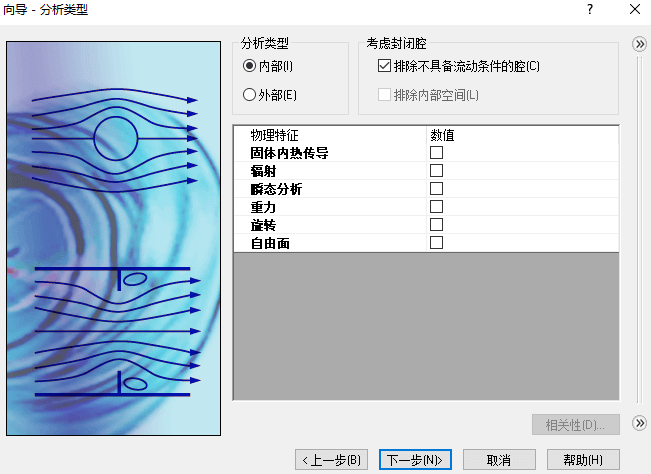

空穴现象
在液压系统中，当流动液体某处的压力低于空气分离压时，原先溶解在液体中的空气就会游离出来，使液体中产生大量气泡，这种现象称为气穴现象。气穴现象使液压装置产生噪声和振动，使金属表面受到腐蚀。
危害：
气泡破灭的冲击力，会引起振动和噪音
会破坏液流的连续性，使流量和压力剧烈波动。
造成金属表面破坏，从而使金属容易腐蚀。
创建项目
利用向导创建流体分析项目

项目名称

单位系统

分析类型
默认流体类型
空化：指单位水中溶解气体的比值

壁面条件

初始条件
对这个分析来说，我们可以按默认定义进行

计算域
让Y方向计算域居中，设置±0.01，

边界条件
入口

出口

目标
通过密度目标来判断是否产生空穴

网格
细化全局网格

计算
切面图：通过颜色发现存在小于水密的的区域（这里就是气液混合的区域），该位置意味着可能产生了气穴空泡的现象。
Q&A
Q切面图最低密度位置，原来不就是空气位置吗？能作为低密度是空穴的判断吗？
A